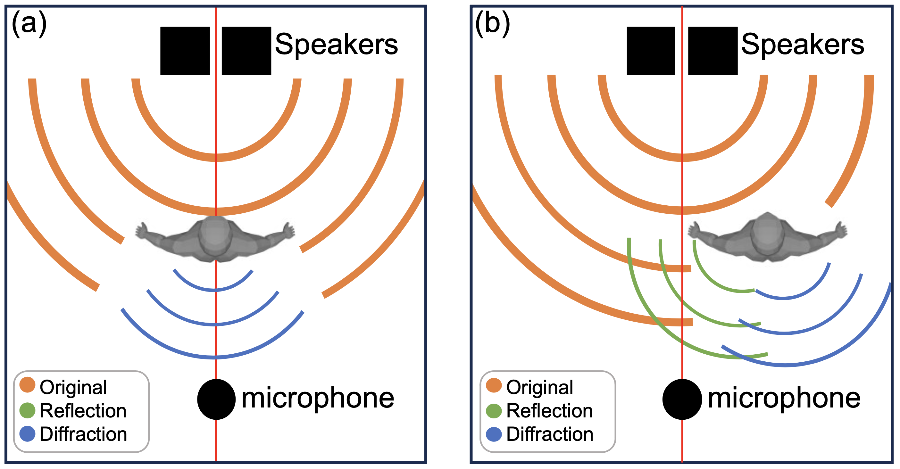
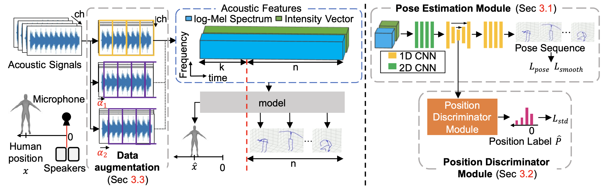
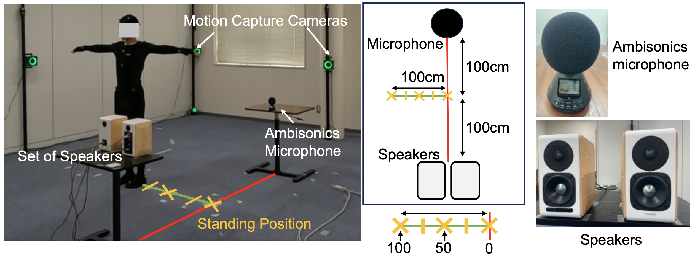
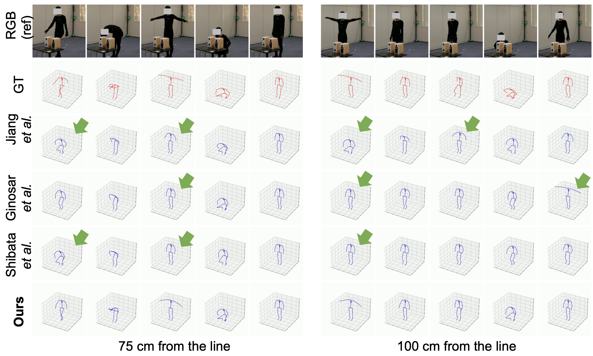

Unlike existing methods that assume the subject is positioned along the line between the microphone and loudspeaker (a), our method estimates 3D human poses when the subject is away from this line (b) — a significantly more challenging setting due to sound reflection and diffraction.
Abstract
This paper explores the problem of 3D human pose estimation from only low-level acoustic signals. The existing active acoustic sensing-based approach for 3D human pose estimation implicitly assumes that the target user is positioned along a line between loudspeakers and a microphone. Because reflection and diffraction of sound by the human body cause subtle acoustic signal changes compared to sound obstruction, the existing model degrades its accuracy significantly when subjects deviate from this line, limiting its practicality in real-world scenarios.
To overcome this limitation, we propose a novel method composed of a position discriminator and a reverberation-resistant model. The former predicts the standing positions of subjects and applies adversarial learning to extract subject position-invariant features. The latter utilizes acoustic signals before the estimation target time as references to enhance robustness against the variations in sound arrival times due to diffraction and reflection. We construct an acoustic pose estimation dataset that covers diverse human locations and demonstrate through experiments that our proposed method outperforms existing approaches.
Proposed Method

Our framework consists of three key components:
Pose Estimation Module — A CNN-based network using 2D and 1D convolutional layers that processes log-Mel Spectrum and Intensity Vector features extracted from ambisonics microphone signals. It takes n + k frames of acoustic features as input, incorporating k prior frames to enhance robustness against changes in sound arrival time due to diffraction and reflection.
Position Discriminator Module — A fully connected layer that predicts the subject's standing position from intermediate features of the pose estimation module. Through adversarial learning, it encourages the pose estimation module to extract features that are invariant to the subject's position, improving generalization across diverse locations.
Data Augmentation via Phase Shifting — By shifting the start time of one period of the TSP signal by α time units, we generate augmented acoustic features that effectively triple the training data, reducing the high collection cost associated with multi-position datasets.
Dataset & Experimental Setup

We constructed a new dataset covering diverse subject positions for active acoustic sensing-based pose estimation. Five male subjects stood at five positions relative to the speaker-microphone axis: directly on the line, and 25 cm, 50 cm, 75 cm, and 100 cm away from the line.
Acoustic signals were captured using an Ambisonics microphone (Zoom H3-VR) and a pair of loudspeakers (Edifier ED-S880DB) that continuously emit Time-Stretched Pulse (TSP) signals. Ground-truth 3D poses were obtained using an OptiTrack motion capture system with 16 cameras, tracking 21 joints. Subjects performed a variety of motions: walking, squatting, bowing, standing, T-pose, and intermediate poses. The total dataset duration is approximately 3.5 hours.
Results

Our method outperforms all baseline approaches across all three evaluation metrics (RMSE, MAE, PCKh@0.5) when subjects are positioned away from the speaker-microphone line.
| Method | RMSE (↓) | MAE (↓) | PCKh@0.5 (↑) |
|---|---|---|---|
| Jiang et al. | 0.75 | 0.40 | 0.48 |
| Ginosar et al. | 0.65 | 0.33 | 0.55 |
| Shibata et al. | 0.66 | 0.35 | 0.53 |
| Ours | 0.53 | 0.28 | 0.60 |
Table 1: Comparison against baselines across all subject positions.
Qualitative results at 75 cm and 100 cm from the line show that our method more accurately captures subtle arm positions (e.g., T-pose detection) compared to baseline methods, which frequently misestimate poses in the first half of sequences or produce unstable predictions.
Ablation Study
| Method | RMSE (↓) | MAE (↓) | PCKh@0.5 (↑) |
|---|---|---|---|
| Ours w/o Adv | 0.55 | 0.29 | 0.56 |
| Ours w/o Prior | 0.69 | 0.35 | 0.55 |
| Ours w/o Aug | 0.58 | 0.31 | 0.55 |
| Ours (Full) | 0.53 | 0.28 | 0.60 |
Table 2: Ablation study. “Adv” = adversarial training with position discriminator; “Prior” = reference window using prior acoustic frames; “Aug” = phase-shift data augmentation.
Each component contributes positively to the overall performance. The inclusion of prior time-step information (“Prior”) was found to dominate accuracy improvements, highlighting the importance of reverberation robustness for subjects away from the speaker-microphone line.
BibTeX
@inproceedings{oumi2024acoustic,
title={Acoustic-based 3D Human Pose Estimation Robust to Human Position},
author={Oumi, Yusuke and Shibata, Yuto and Irie, Go and Kimura, Akisato and Aoki, Yoshimitsu and Isogawa, Mariko},
booktitle={British Machine Vision Conference (BMVC)},
year={2024}
}